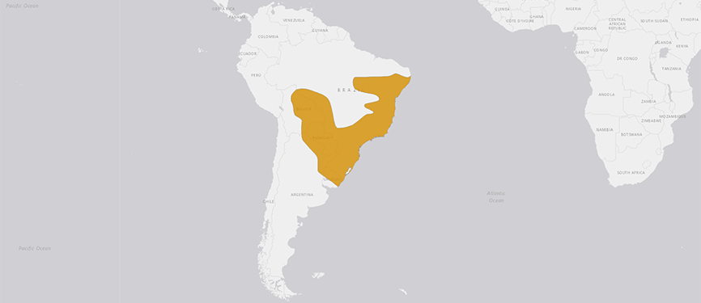
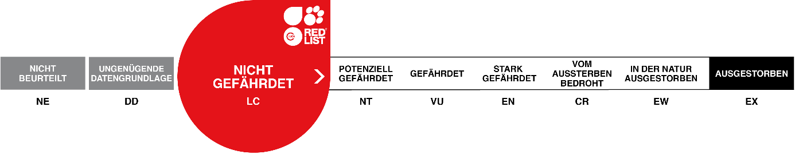

BREITSCHNAUZENKAIMAN
CAIMAN LATIROSTRIS
Der Breitschnauzenkaiman lebt in kleinen, hierarchisch geordneten Gruppen. Besonders ältere Männchen geniessen hier einige Vorzüge. Die Weibchen müssen sich den männlichen Tieren unterordnen.
Bei der Fortpflanzung baut das Weibchen, manchmal zusammen mit dem Partner oder anderen Weibchen, ein Hügelnest. Das verrottende Material des Nestes funktioniert wie ein Komposthaufen und spendet den Eiern Wärme. Die Temperatur im Nest beeinflusst das Geschlecht der Jungtiere. So entwickeln sich bei Temperaturen von ca. 28 bis 30°C weibliche, bei Temperaturen von ca. 31 bis 33°C männliche Jungtiere.
Kurz vor dem Schlupf öffnet die Mutter das Nest und hilft den Jungen beim Schlüpfen. Jungtiere sind nach dem Schlupf ungefähr 24 cm lang und wiegen etwa 40 g. Damit sind sie gerne auch mal Beute für Schlangen und Tejus. Damit möglichst kein Jungtier gefressen wird, werden sie vehement vom Muttertier verteidigt. Doch auch das Vatertier soll sich bei der Aufzucht der Jungtiere beteiligen. Jedoch ist das Sozialleben der Breitschnauzenkaimane in der Wildnis noch wenig erforscht.
Steckbrief
| Verwandtschaft | Krokodile, Alligatoren, Kaimane |
|---|---|
| Lebensraum | grosse, flache Süsswassersümpfe, Mangroven, Seen und Flüsse |
| Lebenserwartung | 60 Jahre |
| Futter | kleine Säugetiere, Vögel, Fische, Krebse, Insekten und Wasserschnecken |
| Lebensweise | tagaktiv |
Verbreitung
Bedrohunsstatus
Karte